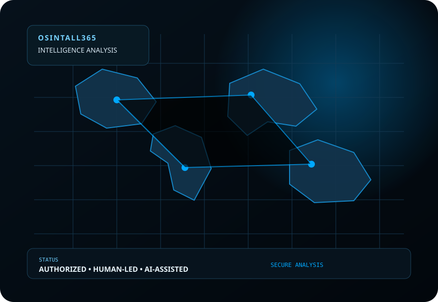
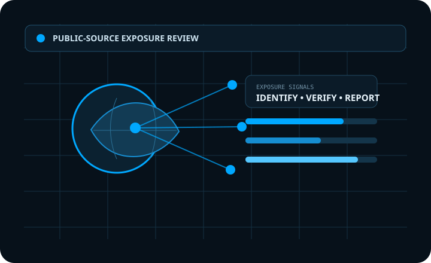
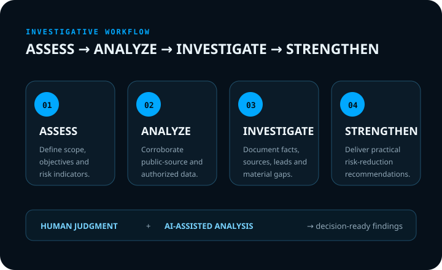
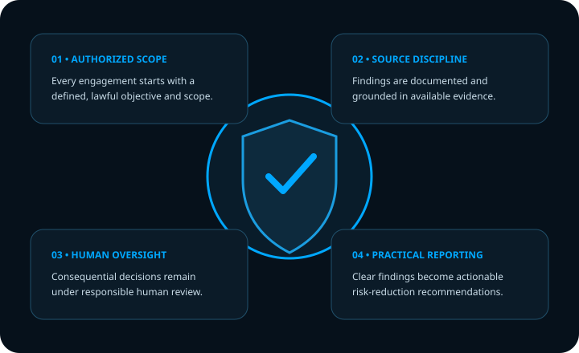

Threat Assessment
Assess employee, workplace, behavioral, operational, and public-source indicators that may create safety or security concerns.
BUSINESS SECURITY • INTELLIGENCE • INVESTIGATIONS
OSINTALL provides professional business security analysis and internal investigation contracting, combining experienced investigative personnel with AI-assisted intelligence and authorized digital diagnostics.
Human-led. AI-assisted. Authorized and lawful. Built around practical risk reduction.

WHAT WE DO
Modern security failures rarely exist in only one place. A vulnerable employee account, an exposed work badge, an unsecured entrance, or sensitive information posted online can become part of the same chain of risk.
Assess employee, workplace, behavioral, operational, and public-source indicators that may create safety or security concerns.
Work with physical-security personnel to identify access-control weaknesses, exposed sensitive areas, procedural gaps, and opportunities for unauthorized entry.
Use authorized AI-assisted and open-source diagnostics to identify publicly exposed information, online attack surfaces, security gaps, and avoidable digital risk.
DIGITAL EXPOSURE
A professional digital exposure review can help organizations understand what information, identifiers, relationships, and attack-surface clues are publicly visible before those details become a problem.
Explore Digital Exposure Reviews
REAL-WORLD EXAMPLES
A photograph can reveal badge details, identifiers, facility information, or patterns that make unauthorized access easier. We identify exposed information and recommend practical controls.
A door left open, propped, or poorly monitored can create an access path to sensitive systems, equipment, records, or personnel.
Publicly available information, workplace indicators, or changes in behavior may warrant additional review. Assessments focus on documented indicators rather than unsupported assumptions.

INTERNAL INVESTIGATIONS
OSINTALL can provide contracted investigative support for organizations dealing with internal concerns, suspected misconduct, information exposure, fraud indicators, employee-safety issues, or other situations requiring disciplined fact-finding.
Our approach combines human investigative judgment with structured OSINT and AI-assisted analysis to organize information, identify leads, document sources, and produce decision-ready findings.
Explore investigative services →WHY OSINTALL365
Every engagement begins with a defined objective and authorized scope. Findings are documented, consequential decisions remain under human oversight, and recommendations are designed around practical risk reduction.

HOW WE WORK
Human analysts remain responsible for consequential decisions while AI-assisted tools accelerate collection, organization, comparison, and analysis.
Define the risk, environment, people, systems, and objectives.
Examine physical, human, public-source, and authorized digital indicators.
Document facts, corroborate information, identify gaps, and develop findings.
Deliver practical recommendations designed to reduce identified risk.
INSIGHTS
Our free research articles explain practical security concepts and how organizations can better understand their public digital footprint.
What Is a Digital Exposure Review? →
Business OSINT: What Organizations Should Know →
SECURITY IS A SYSTEM
Tell us what you are concerned about, and we will determine the appropriate assessment or investigative scope.